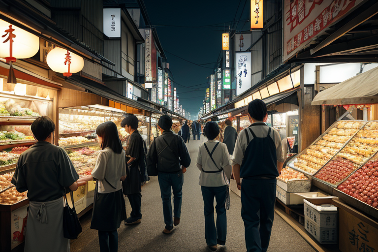
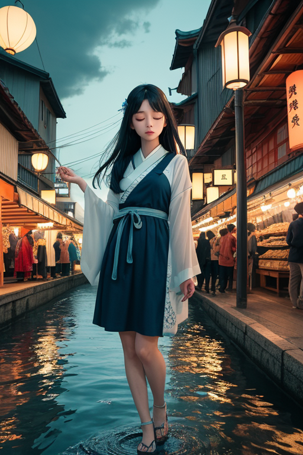
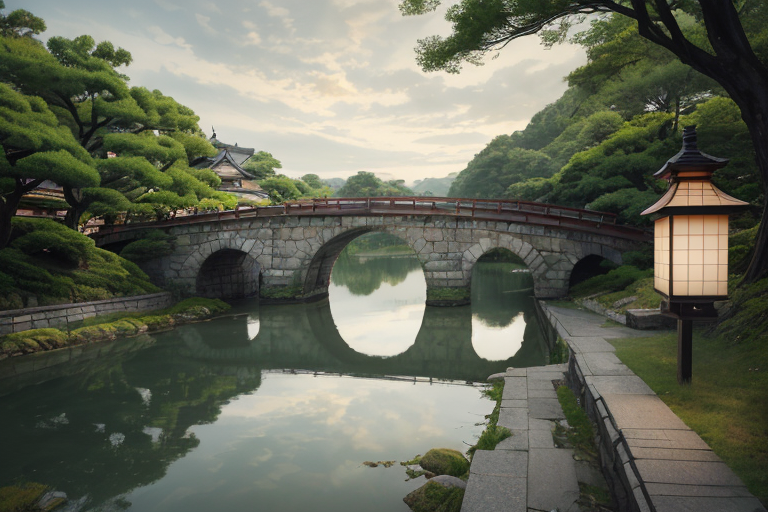
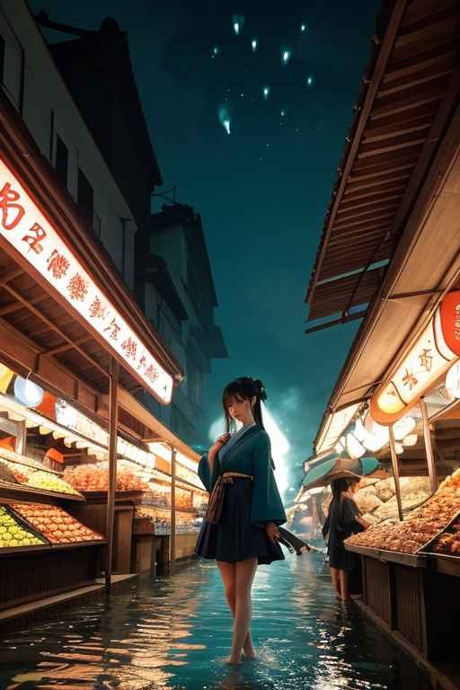
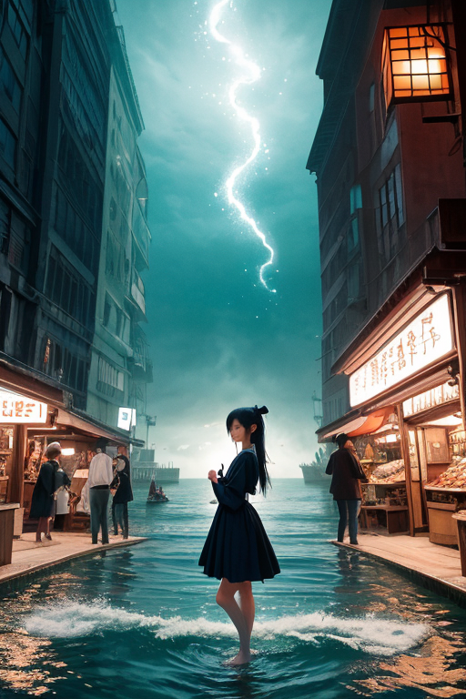

第一章 現実の山口
あなたはまだ気づいていない。この土地にも、王がいることを。
下関の唐戸市場は早朝から活気に満ちていた。競り人の威勢のいい声、氷の上に並ぶふぐやアンコウの銀色の輝き、買い付けに来た料理人の鋭い目。金と欲望と生の匂いが、潮風に混じって流れる。ここは潮流の交差点だ。人の流れ、物の流れ、金の流れ。全てが速く、強く、そして時に残酷に循環している。
市場の片隅、老舗のふぐ料理店の軒先で、一人の男が瓦そばをすすっていた。藍染めの作業着に身を包み、その目は往来を流れる人々を、しかしそれ以上に、見えない何かを追っているようだった。彼の名はヤマグチア・リバース。この土地に派遣された、47人の王の一人である。
彼の耳には、この賑わいの底で蠢く「歪み」の音が聞こえていた。商取引のほんの些細な齟齬、物流の瞬間的な滞り、人間関係の小さな亀裂。それらは無数に生じては消えるが、時に一点に集積し、大きな流れを阻害する澱（おり）となる。彼の仕事は、その澱が決定的な災いの波を起こす前に、微かに流れを変えることだ。英雄的な救済ではない。ただ、ほんの少しの「調整」である。

第二章 歪みの兆候
錦帯橋の上を、観光客の波が行き交う。その足音は、橋下を流れる錦川のせせらぎと重なり、一種のリズムを生み出していた。潮流王ヤマグチア・リバースは、そのリズムの僅かな乱れに耳を澄ませる。今日、橋を渡る人の数は例年より一割多い。しかし、橋のたもとの土産物店の売上は、逆に微減している。観光客の「流れ」は増えているのに、「金の流れ」が追いついていない。これは小さな歪みの兆候だ。
妖精リヴァナが、藍色の光を纏いながら現れた。「王、下関の市場で、ふぐの取引価格に不自然な変動が三件確認されました。いずれも、取引のタイミングが数秒ずれたことによる、人為的ではない齟齬です」
それは、無数の経済活動の糸が、ほんの少しだけ絡み合いを誤った結果だった。放置すれば、特定の業者に不必要な損害が集中し、地域の信用の流れに澱が生まれる。王は静かに目を閉じた。彼の役割は、その絡まった糸を解くことではない。ほんの一瞬、風向きを変え、次の糸がすれ違うタイミングを百分の一秒だけ調整することだ。

第三章 王の葛藤
錦帯橋の下を流れる水は、常に同じ道筋をたどらない。王はその流れを見つめながら、自らの内に湧く違和感を認識していた。感情だ。吉田松陰が松下村塾で若者に語りかけた、変革への情熱のような熱い何かが、彼の静かなる調整の内側で蠢いていた。
先日の経済活動の微調整。あれは確かに、大きな歪みの種を未然に散らした。しかし、その過程で彼は感じた。損害を免れた業者の安堵、そしてその裏で、ほんのわずかに機会を逃した別の者たちの、かすかな失望のざわめきを。守るとは、一方を選び、他方を選ばないことなのか。潮流を調整するとは、すべての流れを均すことではなく、時に特定の流れを優先させることなのか。
萩焼の窯元で、職人が釉薬の掛かり具合を見極めるように、王はその感情を見つめた。大胆な変革を旨とする彼の本質は、時に「全てを変えてしまえ」と囁く。だが、彼は調整者だ。ヒーローではない。破壊も創造も、彼の役目ではない。
流れを変える勇気は、時に、流れを変えない勇気と背中合わせであることを、彼は学び始めていた。

第四章 潮流の本質
錦帯橋の下を流れる錦川の水音は、絶え間ない商いのざわめきのようだった。リヴァナは橋の欄干に腰かけ、往来する人々の欲望と不安の波を掌でなぞる。「商いとは、王よ、約束の交換です」彼女は静かに言った。「この港で交わされる約束は、金だけではない。信頼、未来、時には命そのものの流れを変える」
下関の市場では、ふぐを扱う包丁さばきに、チョウリュウナが微かに息を吹きかけていた。一瞬の判断が生死を分つその緊張の中に、変革の原初的な形を見る。「流れを変えるとは、約束を更新すること。古い流れを断ち切る勇気と、新しい流れを信じる勇気は、同じ硬貨の表裏です」
王は市場の喧騒の中に立ち、無数の約束の糸が織りなす網目を見た。彼が調整できるのは、その糸が絡まる一瞬を、ほんの少し遅らせることだけだ。破綻を防ぎ、新たな取引が生まれる隙間を創る。革命とは、彼にとっては、この無数の小さな約束の更新の積み重ねでしかない。

第五章 微調整と余韻
角島大橋を渡る風は、潮の香りを運び、橋桁に微かな唸りを立てる。潮流王はその音に耳を澄ませ、海峡を往来する船の航跡、観光客の足取り、そして地元の漁師たちの会話に潜む「流れ」を感じ取っていた。彼の仕事は、誰も気づかない微調整だ。観光バスの到着時刻を数十秒ずらし、混雑のピークを分散させる。漁に出る時間帯を、ほんの少しだけ潮の流れが安定する方向に誘導する。それは革命でも大事件でもなく、日常に溶け込んだ、無数の小さな選択肢の調整に過ぎない。
錦帯橋の下を流れる水は、常に新しい。王は橋のたもとに佇み、一人の学生がカメラを構えるその一瞬、通りかかる老夫婦の歩みが偶然に交差しないよう、ほんのわずかな「間」を創り出した。その結果生まれたのは、邪魔のない一枚の写真と、すれ違う際のほのかな会釈だけだ。誰もこの調整に気づかない。気づかれてはならない。
流れを変える勇気とは、時に、このように目立たず、評価されない選択を積み重ねる持続力のことを言うのかもしれない。王は藍と白の紋章を胸に、再び人混みに消えた。彼が調整した小さな偶然は、やがてこの町の、目に見えぬ健全な流れの一部となる。
あなたの町にも、王がいる。